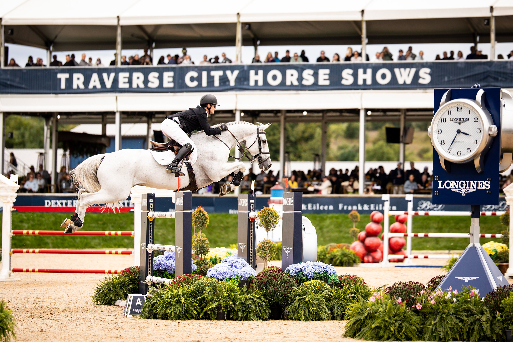

La semana del salto: Equita Lyon arranca el CSI5*-W y Rabat cierra el Morocco Royal Tour
El calendario internacional del salto encadena esta semana dos CSI5*-W con puntuación para la Liga de Europa Occidental de la Copa del Mundo, tres CSI de nivel medio y la última Copa de Naciones del Sunshine Tour en Vejer.

Uso editorial autorizado FEI
Equita Lyon celebra su 32.ª edición del 28 de octubre al 1 de noviembre en el recinto Eurexpo. El gran salón francés concentra tres Copas del Mundo en el mismo pabellón: la de salto —el CSI5*-W con el Longines FEI Jumping World Cup Grand Prix como cita grande—, la de doma (CDI-W) y la de enganches (CAI-W), además de pruebas de monta western y espectáculos. El Grand Prix de 2025 se lo adjudicó el anfitrión Olivier Perreau; la organización no ha publicado todavía la lista oficial de inscritos para 2026, que se cerrará en los próximos días.
En paralelo, Rabat - Salé Bouregreg acoge del 29 de octubre al 1 de noviembre la segunda etapa del Morocco Royal Tour, un CSI5*-W que también otorga puntos a la Liga Árabe de la Copa del Mundo. La primera parada, el CSI5*-W de El Jadida, se cerró hace una semana con victoria del alemán Tom N. Schewe, que apunta ya a la Final de Basilea 2027. Los inscritos para Rabat quedan por confirmar.
El contingente español se reparte entre Vejer y la costa valenciana. En la Dehesa Montenmedio, el CSIO3* del 28 de octubre al 1 de noviembre cierra el calendario FEI de Copas de Naciones del Sunshine Tour, con la prueba por equipos como momento central. En Oliva Nova se simultanean dos escenarios: el CSI3* Riviera Resort (26 oct–1 nov) y el MET Oliva (27 oct–1 nov) a nivel CSI2*. Dentro del mismo nivel compiten también Peelbergen y Kronenberg en Países Bajos, Riesenbeck en Alemania y Samorin en Eslovaquia.
Fuera de Europa, San Miguel de Allende abre el CSI3* del Mexico Fall Tour (28 oct–1 nov) con el que la federación mexicana cierra temporada, y Astana (CSI1*-W, Kazajistán) y Hangzhou (CSI2*-W, China) suman etapas de las Ligas asiáticas de la Copa del Mundo. La lista oficial de participantes de cada concurso irá publicándose en las webs organizadoras y en el portal del calendario FEI.
Todo sobre Royal Agricultural Winter Fair →
Por Lucía Valdeolmos